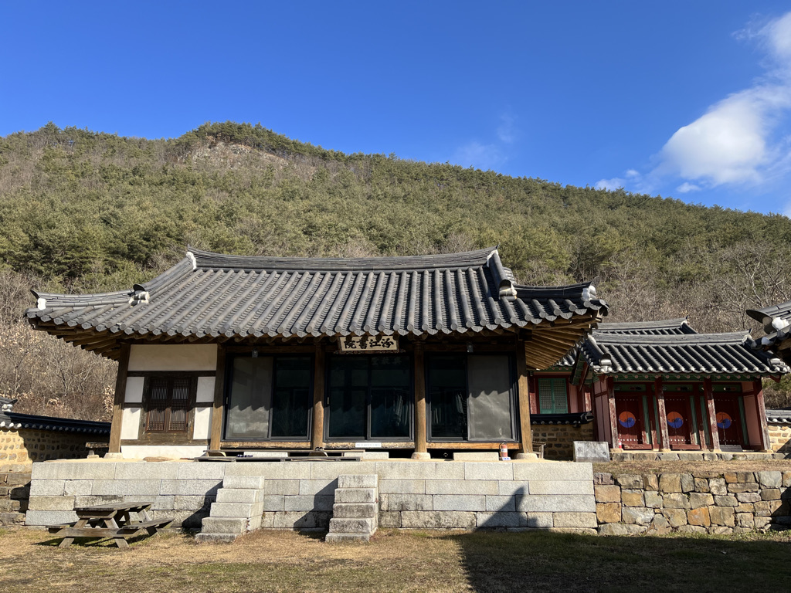

춘카이드월드 by ck
1M subscribers
-
 안동여행!! 여가기 짱입니다. 박부리와 준뚜기의 여행브이로그!! chunkind 82K views
안동여행!! 여가기 짱입니다. 박부리와 준뚜기의 여행브이로그!! chunkind 82K views -
안동여행!! 사진 맛집 안동!! 박부리와 준뚜기의 여행브이로그!! chunkind 123K views
-
안동여행!! 맛집 탐방!!! 박부리와 준뚜기의 여행브이로그!! chunkind 32K views